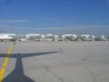
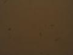

Rimozione della polvere utilizzando un flatfield
La polvere può entrare nell'ottica di una fotocamera. Nelle immagini panoramiche create a partire da fotografie affette da questo problema, il ripetersi uniforme della macchia, originata dal granello di polvere, può essere particolarmente fastidioso.

È possibile preparare un flatfield adatto alla correzione. Anche se si può correggere le immagini di partenza una alla volta, prima del processo di assemblatura, con un programma tipo Gimp, per esempio, la procedura di lavoro sarebbe più semplice se fosse direttamente il programma di assemblatura a supportare l'utilizzo di un flatfield.
I flatfield possono essere utilizzati anche per correggere la vignettatura, o una combinazione di quest'ultima
con gli aloni generati dalla polvere. Anche con hugin hugin 0.7 che si avvale di un approccio parametrico per la vignettatura, un flatfield preparato in modo adeguato,
è utile per la rimozione della polvere.
Esempio di capacità del flatfield
 Immagine originale |
 Snapped raw flatfield |
 Flatfield |
 Immagine corretta |
La fotografia all'estrema sinistra presenta delle macchie dovute alla polvere nell'obiettivo.
Avendo a disposizione un foglio bianco e impostando l'apertura dell'obiettivo allo stesso valore dello scatto di sinistra, è possibile catturare una fotografia del flatfield su sfondo bianco contenente le macchie isolate prodotte dalla polvere.
Con alcuni aggiustamenti di luminosità e sfocatura con Gimp, la terza immagine rappresenta il flatfield utilizzato nel layer con la modalità impostata su "dividi".
Quella all'estrema destra è l'immagine corretta
L'esempio riguarda hugin 0.6beta dato che in hugin 0.7beta5 non incorpora più l'utilizzo del flatfield da interfaccia grafica. In particolare per le immagini panoramiche assemblate, le macchie di polvere tendono a essere fastidiose dato che si ripropongono più volte e ripetitivamente e quindi l'occhio umano tende a individuarle più facilmente rispetto a un singolo elemento di disturbo posizionato in modo casuale.